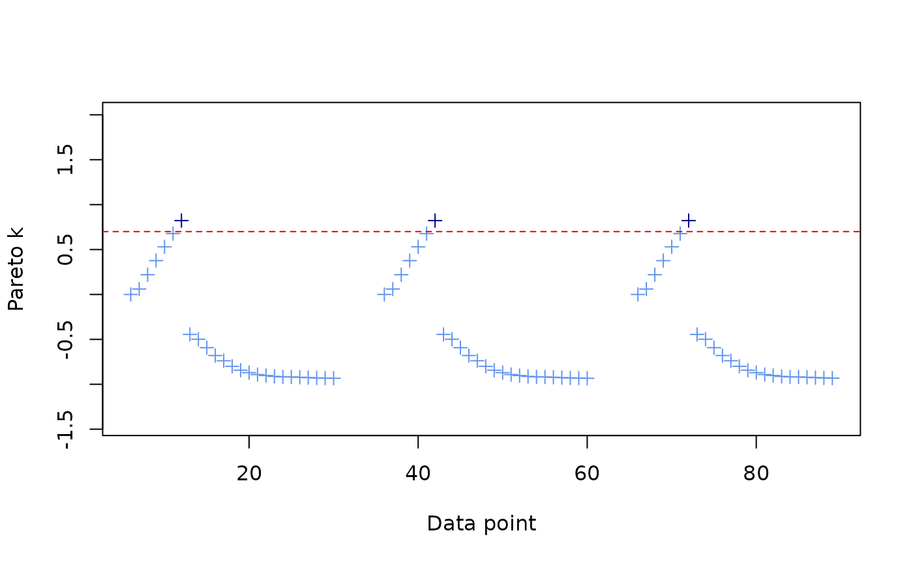
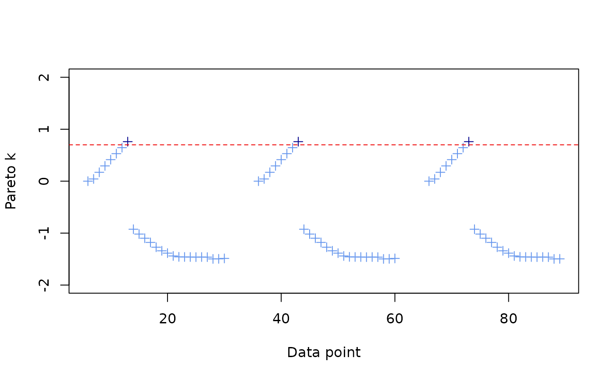

Model Comparison using Leave Future Out Cross Validation (LFO-CV)
LFO-CV_model_comparison.RmdDiffusion data is time-series data, and using PSIS-LOO-CV for model
comparison (as default in STb_compare()) allows information
from future events to influence the predictions for past observations,
creating an “overly optimistic” ELPD. To assess the predictiveness of
models with time-dependencies, future observations should ideally be
excluded as well, in a procedure called leave-future-out cross
validation (LFO-CV) (Bürkner,
Gabry & Vehtari 2020). They propose a method for approximating
LFO-CV using pareto-smoothed importance sampling, and only refitting
models when the
pareto-
value (i.e. variability in importance ratios calculated during the PSIS
procedure) exceeds a certain threshold. This greatly reduces the
computation time needed to perform LFO-CV, although this will still take
more time than using PSIS-LOO-CV or WAIC.
Taking inspiration from code provided by Bürkner et al., I have included functionality for applying approximate LFO-CV to model comparison. This vignette will use simulated data to introduce users to this process.
Let’s use the same code from the Simulating Data for Power Analyses vignette to simulate multiple diffusion trials:
diffusion_trial <- function(trial_num, obs_duration, g, parameter_values) {
# Initialize dataframe to store the time of acquisition data
results <- data.frame(id = 1:N, time = obs_duration + 1, t_end = obs_duration, trial = trial_num)
# Simulate the diffusion
for (t in 1:obs_duration) {
# identify knowledgeable individuals
informed <- results[results$time <= obs_duration, "id"]
# identify naive individuals
potential_learners <- c(1:N)
potential_learners <- potential_learners[!(potential_learners %in% informed)]
# break the loop if no one left to learn
if (length(potential_learners) == 0) {
results$t_end <- t - 1 # minus 1 so t_end=last learner
break
}
# calculate the hazard for potential learners
learning_rates <- sapply(potential_learners, function(x) {
neighbors <- neighbors(g, x)
C <- sum(neighbors$name %in% informed)
lambda <- parameter_values[parameter_values$id == x, "lambda_0"] +
(parameter_values[parameter_values$id == x, "s_prime"] * C)
return(lambda)
})
# convert hazard to probability
learning_probs <- 1 - exp(-learning_rates)
# for each potential learner, determine whether they learn the behavior
learners_this_step <- rbinom(n = length(potential_learners), size = 1, prob = learning_probs)
# update their time of acquisition
new_learners <- potential_learners[learners_this_step == 1]
results[results$id %in% new_learners, "time"] <- t
}
return(results)
}
run_sims <- function(num_trials, obs_duration, parameter_values, N, k) {
# storage for all trials
all_event_data <- data.frame(
id = integer(),
time = numeric(),
t_end = numeric(),
trial = integer()
)
all_edge_list <- data.frame(
focal = integer(),
other = integer(),
trial = integer(),
assoc = numeric()
)
for (trial in 1:num_trials) {
# create random regular graph
g <- sample_k_regular(N, k, directed = FALSE, multiple = FALSE)
V(g)$name <- 1:N
results = diffusion_trial(trial, obs_duration, g, parameter_values)
# create event + network data and append to cumulative dataframes
event_data <- results %>%
arrange(time)
all_event_data <- rbind(all_event_data, event_data)
edge_list <- as.data.frame(as_edgelist(g))
names(edge_list) <- c("focal", "other")
edge_list$trial <- trial
edge_list$assoc <- 1 # assign e_ij=1 since this is just an edge list
all_edge_list <- rbind(all_edge_list, edge_list)
message("Trial", trial, "completed.\n")
}
# package up data into list and return it
final_results <- list(
"event_data" = all_event_data,
"networks" = all_edge_list
)
return(final_results)
}Let’s define our parameters:
set.seed(123)
# Parameters
N <- 30 # population size
k <- 5 # degree
log_lambda_0 <- -7
log_sprime <- -5
obs_duration <- 100
num_trials <- 3
#learning parameters
parameter_values <- data.frame(
id = 1:N,
lambda_0 = exp(log_lambda_0),
s_prime = exp(log_sprime)
)
parameter_values$s = parameter_values$s_prime/parameter_values$lambda_0Now, we can run the simulations and fit two models:
# run sims
results <- run_sims(num_trials, obs_duration, parameter_values, N, k)
#> Trial1completed.
#> Trial2completed.
#> Trial3completed.
# import data
data_list <- import_user_STb(
event_data = results[["event_data"]],
networks = results[["networks"]]
)
#> User supplied edge weights as point estimates 📍
#> No ILV supplied.
#> User input indicates static network(s). If dynamic, include 'time' column.
#> ░▒▓█►─═ Sanity check ═─◄█▓▒░
#> User provided data about:
#> 30 individuals across 3 independent diffusions (trials).
#> 12 of 30 individuals learned in trial 1
#> 16 of 30 individuals learned in trial 2
#> 9 of 30 individuals learned in trial 3
#> User supplied 1 networks: assoc
#> ILV for asocial learning: ILVabsent
#> ILV for social learning: ILVabsent
#> multiplicative model ILV: ILVabsent
#> 🤔 Does that seem right to you?
# fit full model
model_full <- generate_STb_model(data_list)
#> Creating cTADA type model with the following default priors:
#> log_lambda0 ~ normal(-4, 2)
#> log_sprime ~ normal(-4, 2)
#> beta_ILV ~ normal(0,1)
#> log_f ~ normal(0,1)
#> k_raw ~ normal(0,3)
#> z_veff ~ normal(0,1)
#> sigma_veff ~ normal(0,1)
#> rho_veff ~ lkj_corr_cholesky(3)
#> gamma ~ normal(0,.5)
fit_full <- fit_STb(data_list, model_full)
#> Detected N_veff = 0
#> ⏳ Sampling...
#> Running MCMC with 1 chain...
#>
#> Chain 1 Iteration: 1 / 1000 [ 0%] (Warmup)
#> Chain 1 Iteration: 100 / 1000 [ 10%] (Warmup)
#> Chain 1 Iteration: 200 / 1000 [ 20%] (Warmup)
#> Chain 1 Iteration: 300 / 1000 [ 30%] (Warmup)
#> Chain 1 Iteration: 400 / 1000 [ 40%] (Warmup)
#> Chain 1 Iteration: 500 / 1000 [ 50%] (Warmup)
#> Chain 1 Iteration: 501 / 1000 [ 50%] (Sampling)
#> Chain 1 Iteration: 600 / 1000 [ 60%] (Sampling)
#> Chain 1 Iteration: 700 / 1000 [ 70%] (Sampling)
#> Chain 1 Iteration: 800 / 1000 [ 80%] (Sampling)
#> Chain 1 Iteration: 900 / 1000 [ 90%] (Sampling)
#> Chain 1 Iteration: 1000 / 1000 [100%] (Sampling)
#> Chain 1 finished in 1.0 seconds.
#> 🫴 Use STb_save() to save the fit and chain csvs to a single RDS file. Or don't!
# fit constrained model
model_asoc <- generate_STb_model(data_list, model_type = "asocial")
#> Creating cTADA type model with the following default priors:
#> log_lambda0 ~ normal(-4, 2)
#> log_sprime ~ normal(-4, 2)
#> beta_ILV ~ normal(0,1)
#> log_f ~ normal(0,1)
#> k_raw ~ normal(0,3)
#> z_veff ~ normal(0,1)
#> sigma_veff ~ normal(0,1)
#> rho_veff ~ lkj_corr_cholesky(3)
#> gamma ~ normal(0,.5)
fit_asoc <- fit_STb(data_list, model_asoc)
#> Detected N_veff = 0
#> ⏳ Sampling...
#> Running MCMC with 1 chain...
#>
#> Chain 1 Iteration: 1 / 1000 [ 0%] (Warmup)
#> Chain 1 Iteration: 100 / 1000 [ 10%] (Warmup)
#> Chain 1 Iteration: 200 / 1000 [ 20%] (Warmup)
#> Chain 1 Iteration: 300 / 1000 [ 30%] (Warmup)
#> Chain 1 Iteration: 400 / 1000 [ 40%] (Warmup)
#> Chain 1 Iteration: 500 / 1000 [ 50%] (Warmup)
#> Chain 1 Iteration: 501 / 1000 [ 50%] (Sampling)
#> Chain 1 Iteration: 600 / 1000 [ 60%] (Sampling)
#> Chain 1 Iteration: 700 / 1000 [ 70%] (Sampling)
#> Chain 1 Iteration: 800 / 1000 [ 80%] (Sampling)
#> Chain 1 Iteration: 900 / 1000 [ 90%] (Sampling)
#> Chain 1 Iteration: 1000 / 1000 [100%] (Sampling)
#> Chain 1 finished in 0.1 seconds.
#> 🫴 Use STb_save() to save the fit and chain csvs to a single RDS file. Or don't!The LFO-CV method presented by Bürkner, Gabry & Vehtari is
designed for a single sequential time-series, rather than multiple
time-series in the same model. NBDA data may have multiple trials that
can be treated as independent diffusions, or at least where the order of
the trials is not scientifically meaningful. To accommodate this, I’ve
adjusted the LFO-CV method to proceed in parallel across the trials by
default. This approach is appropriate for answering the question: “Given
the first i events within each diffusion, how well does the model
predict the next M events within each diffusion?” The original approach,
sequential LFO-CV, answers the question: “Given all events observed so
far, how well does the model predict the next M events (even if those
events are in a separate trial at some point in the future)?” This
really only makes sense if the ordering of trials is scientifically
meaningful, if you expect events from one trial to be predictive of
events in another, or if you’re reusing individuals between trials and
expect that information about them in one trial is meaningful for
predicting their behavior in other trials. Also it will take longer to
calculate. For the moment, it seems reasonable to me that parallel
is the correct choice for most use-cases of NBDA, but either way,
your choice can be input using argument lfo_type in the
call to STb_lfo().
In parallel LFO-CV, for each trial, we define a minimum number of observations that are needed before attempting prediction. We then define number of observations into the future that we want to predict. STbayes default value is . Because we proceed in parallel, if each trial has the same number of individuals, the number of predicted observations at each step is . If trials have unequal numbers of individuals, the total number of predicted observations at each step are . I denote here because, of course, once we have predicted all observations in a trial, there are none left to be included.
L <- 5
M <- 1
k_thres = 0.7
output_full <- STb_lfo(
lfo_type = "parallel",
fit = fit_full,
STb_data = data_list,
stan_model = model_full,
M=M, L=L,
k_thres = k_thres
)
output_asoc <- STb_lfo(
lfo_type = "parallel",
fit = fit_asoc,
STb_data = data_list,
stan_model = model_asoc,
M=M, L=L,
k_thres = k_thres
)You can plot the pareto-k values for each observation and see when the model was refitted.


I’ve written a convenience function to output a comparison table, but
for now I’ve kept it separate from STb_compare():
lfo_comparison = STb_compare_lfo(output_full, output_asoc)
print(lfo_comparison)
#> elpd_diff se_diff elpd_lfo se_elpd_lfo lfoic se_lfoic
#> model1 0.0 0.0 -942.9 18.4 1885.8 36.8
#> model2 -86.8 24.4 -1029.7 27.1 2059.5 54.2We can compare it to the results given by PSIS-LOO. This gives a larger elpd_diff, thus a more optimistic opinion about whether the full model is more predictive.
loo_comparison <- STb_compare(fit_full, fit_asoc)
#> Calculating LOO-PSIS.
#> Comparing models.
#> Calculating pareto-k diagnostic (only for loo-psis).
print(loo_comparison$comparison, simplify = F)
#> elpd_diff se_diff elpd_loo se_elpd_loo p_loo se_p_loo looic se_looic
#> fit_full 0.0 0.0 -217.5 22.6 1.8 0.3 435.1 45.1
#> fit_asoc -197.9 15.8 -415.5 10.6 2.9 0.2 830.9 21.2For illustration, below I calculate the elpd difference by hand. When examining the point-wise ELPD, you’ll see that there are a number of NA values. These are the values we removed before prediction.
pointwise_diff = attr(output_full, "pointwise")$elpd_lfo - attr(output_asoc, "pointwise")$elpd_lfo
elpd_diff <- sum(pointwise_diff, na.rm = T)
se_diff <- sqrt(sum(!is.na(attr(output_full, "pointwise")$elpd_lfo))) * stats::sd(pointwise_diff, na.rm = T)
print(paste("elpd_diff:", round(elpd_diff,2), "se_diff", round(se_diff,2)))
#> [1] "elpd_diff: 86.84 se_diff 24.42"For the sake of comparison, I rerun with
lfo_type="sequential" below.
lfo_comparison = STb_compare_lfo(output_full, output_asoc)
print(lfo_comparison)
#> elpd_diff se_diff elpd_lfo se_elpd_lfo lfoic se_lfoic
#> model1 0.0 0.0 -1020.6 12.1 2041.2 24.3
#> model2 -108.9 21.7 -1129.5 22.8 2259.0 45.6